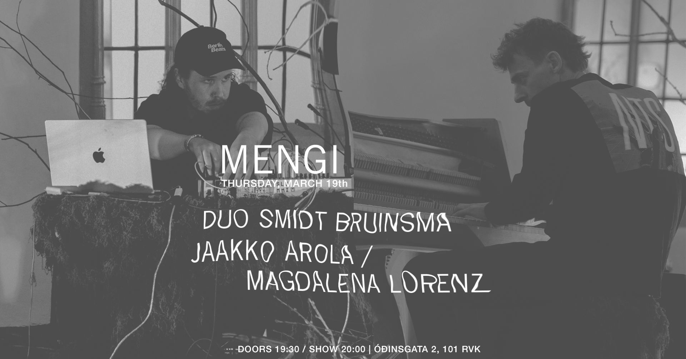
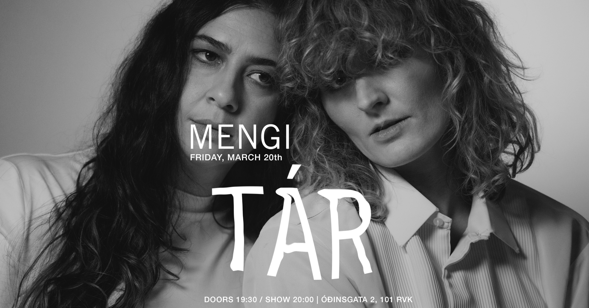
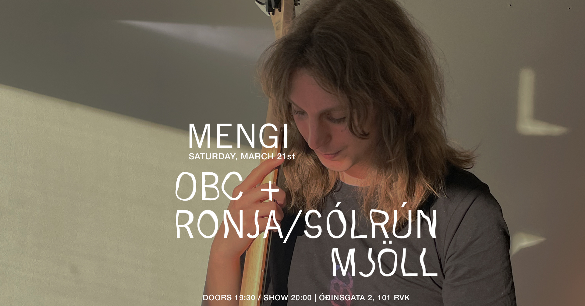
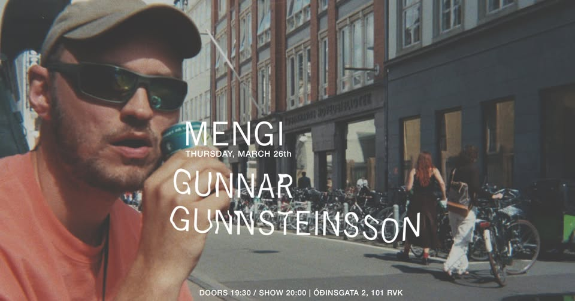
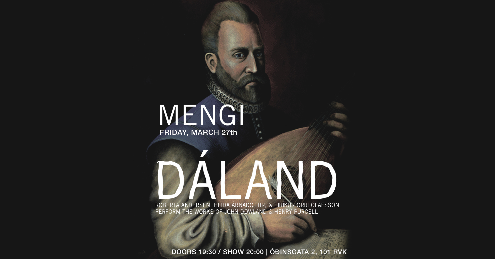

Upcoming Events

THU 19.03 Duo Smidt Bruinsma / Jaakko Arola & Magdalena Lorenz
Tickets Thursday, March 19th DUO SMIDT BRUINSMA / JAAKKO AROLA & MAGDALENA LORENZ doors 19:30 / show 20:00 2500kr / 2000kr students / pay what u can Smidt and Bruinsma’s improvisations are made with a pallette of sounds from the world of piano music and electronic music. Lennart’s animated piano performances are as impressive as they are emotional, ranging from intimate, delicate melodies to wild, scattering rhythms. This, combined with the sonic twisting of Bart Bruinsma- drawing the piano’s sound in-and-out of the digital domain in real-time, makes for a idiosyncratic style of improvisation between the two long-time friends. The project initially formed for a spontaneous show at the opening a visual art gallery, where the duo launched an audio installation by Bart by introducing it with a live concert. Pleasantly surprised by the outcome of the performance, the duo decided to continue exploring this unique soundworld together. Lennart Smidt is a pianist and composer from Berlin. As a place where creativity meets groove and spirit, where improv meets composition, Lennart sees jazz as an acoustic playground. He released his first ensemble EP “Take.Off” in 2016, following with his piano solo album “Boomerang” in 2025. Bart Bruinsma is a composer, performer and sound-designer from the Netherlands. He creates theatre soundtracks, audio-visual installations and live music shows, solo as BARTONDISPLAY and in collaboration with fellow artists collectives. He released his solo EP “NONTENT” with Reykjavik collective Post-Dreifing, and is now in the process of releasing a co-composed album of amalgamated voice and intricate electronics in collaboration with Ragnheiður Erla Björnsdóttir. ------ Jaakko Arola: bass clarinet Magdalena Lorenz: violin

FRI 20.03 TÁR
Tickets Friday, March 20th TÁR doors 19:30 / show 20:00 2500kr / 2000kr students / pay what u can Tónlistarkonurnar ZÖE og Elín Ey skipa Alt/Folk dúóið TÁR sem kemur fram í MENGI föstudaginn 20.Mars næstkomandi, þær munu prufa sig áfram með nýtt óútgefið efni og spila meðal annars lagið Paradise, sem kemur út 10.Apríl, í fyrsta sinn opinberlega. Elín Ey þarf vart að kynna en hún hefur verið mikilvægur þáttur í íslensku tónlistarlífi í áraraðir sem lagahöfundur, framleiðandi og flytjandi. ZÖE er upprunalega frá Los Angeles, þar sem hún lærði hljóðverkfræði og framleiðslu. Hún hefur búið og starfað sem tónlistarkona hér á landi, unnið með mörgum af helstu tónlistarmönnum landsins og kennt næstu kynslóð af ungum tónlistarkonum hljóðverkfræði og framleiðslu. Báðar eru þær afrekslistamenn á sinn eigin hátt en saman skapa þær tæra töfra. Þær skilja máttinn sem hrár heiðarleiki í textum skilur eftir sig og eru óhræddar við að prufa sig áfram með hljóð. Þessar hæfuleikaríku listakonur koma hér saman og deila ástríðu sinni fyrir því að segja raunverulegar sögur í gegnum tónlist sem áhorfendur geta tengt við eigið líf. Með þeim spila Eyþór Gunnarsson á hljómborð og Kiddi Kiddi Snær á trommur. ENGLISH: Musicians ZÖE and Elín Ey form the Alt/Folk duo TÁR, which will perform at MENGI on Friday, March 20th. They will be experimenting with new unreleased material and will play, among other things, the song Paradise, which will be released on April 10th, for the first time in public. Elín Ey needs little introduction, but she has been an important part of the Icelandic music scene for years as a songwriter, producer and performer. ZÖE is originally from Los Angeles, where she studied sound engineering and production. She has lived and worked as a musician in Iceland, worked with many of the country's leading musicians and taught the next generation of young female musicians sound engineering and production. Both are accomplished artists in their own way, but together they create pure magic. They understand the power that raw honesty in lyrics leaves behind and are not afraid to experiment with sound. These talented artists come together here and share their passion for telling real stories through music that audiences can relate to their own lives. They are joined by Eyþór Gunnarsson on keyboards and Kiddi Kiddi Snær on drums.

SAT 21.03 OBC + Ronja/Sólrún Mjöll
Tickets Saturday, March 21st OBC + Ronja / Sólrún Mjöll doors 19:30 / show 20:00 2500kr / 2000kr students / pay what u can Continuing her DIY explorations of instrument-building and feedback as a core component of sound production, OBC is wielding a homemade feedback bass based on the Halldorophone. This electro-acoustic instrument, being played with frequency-beating, oscillates between tonal noise and rhythms turning into an analog-acoustic drum machine. From there, a relation develops between the instrument and the player leading to an improvisation that keeps evolving between resonant drone, textures and pure roaring noise. OBC is a French sound artist and performer based in Reykjavik, Iceland. She studies feedback phenomena and their relations to ghosts under the direction of Nicola Privato while conceiving her own instrumental devices. She explores free improvisation with her DIY feedback instrument(s) : semi-critical systems creating tipping points between rhythms and sounds. Active as an artist, a sound engineer and an organiser within Geneva and Reykjavik’s DIY/DIT underground scenes, she creates a rich sonic landscape that is built from the diversity of her inspirations and her musical approaches : sometimes drony, sometimes noisy but always punk. + ronja on computer + sólrún mjöll on drums

THU 26.03 Gunnar Gunnsteinsson
Tickets Thursday, March 26th GUNNAR GUNNSTEINSSON doors 19:30 / show 20:00 2500kr / 2000kr students / pay what u can Tónleikar með Gunnari Gunnsteinssyni í Mengi, 26. mars. Nýtt og gamalt efni í bland, rangalar, textar, gatnamót, spariskór, gregórískur tech schlager, vetrarfrí á Tenerife, kirkjubjöllur, miðaldadraumar, DJ janitor og músíkkosmológía. / A mixture of new and old materials, labyrinths, texts, intersections, shiny leather shoes, gregorian tech schlager, winter vacation in Tenerife, church bells, medieval dreams, DJ janitor and musicosmology. https://gunnargunnsteinsson.bandcamp.com/

FRI 27.03 Dáland
Tickets Friday, March 27th DÁLAND: Róberta Andersen, Heiða Árnadóttir, & Eiríkur Orri Ólafsson perform the works of John Dowland & Henry Purcell doors 19:30 / show 20:00 2500kr / 2000kr students / pay what u can John Dowland (1563–1626) and Henry Purcell (1659–1695) were influential English composers who were masters of composing complex, beautiful and emotional melodies. Singer Heiða Árnadóttir, trumpeter Eiríkur Orri Ólafsson, and electric guitarist Róberta Andersen plan to weave these melodies into a new soundscape, combining the old and the new in a beautiful musical journey. They will reimagine these classic works in a way that evokes new and unexpected experiences. John Dowland (1563–1626) and Henry Purcell (1659–1695) were influential English composers, renowned for their ability to write music of great beauty, emotional depth, and complexity. In this project, singer Heiða Árnadóttir, trumpeter Eiríkur Orri Ólafsson, and electric guitarist Róberta Andersen weave these timeless melodies into a new soundscape, blending the old with the new. Together, they reimagine these classic works, transforming them into a musical journey that opens the door to fresh and unexpected experiences.